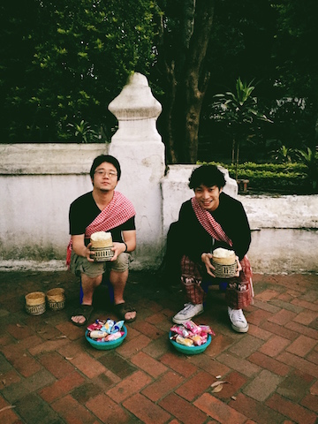
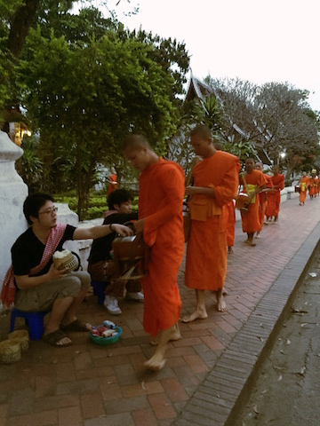
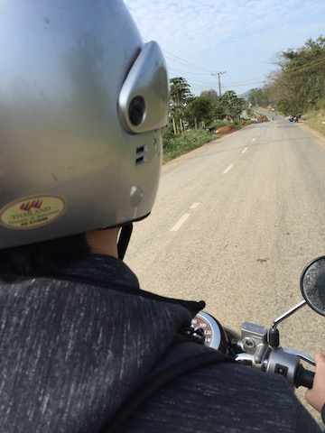
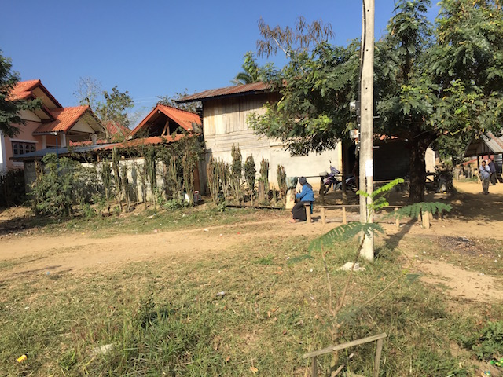
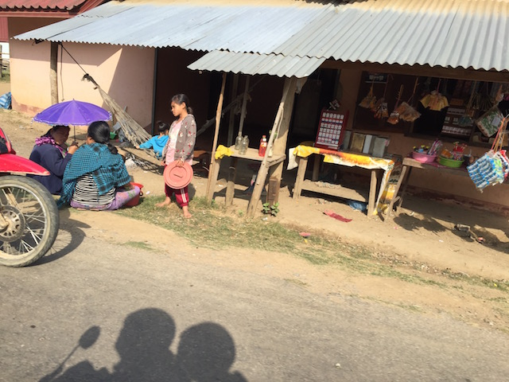
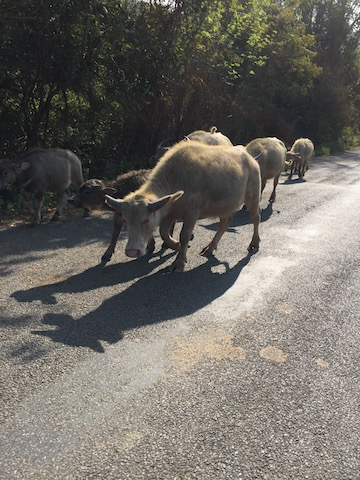
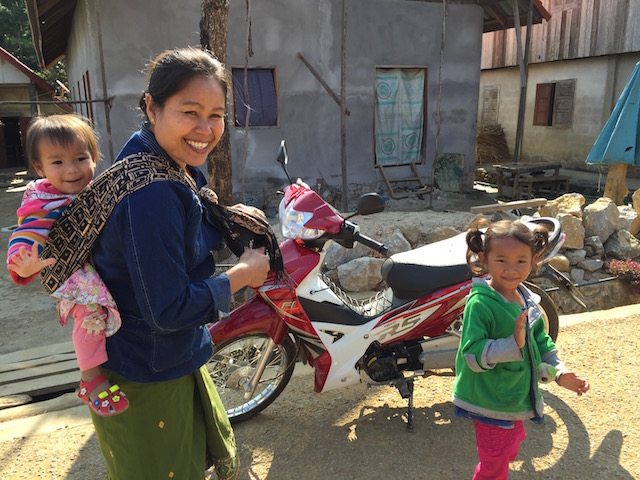
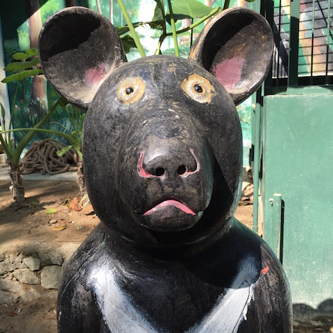
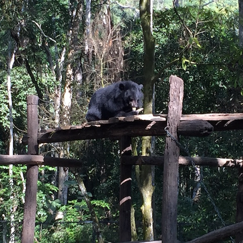
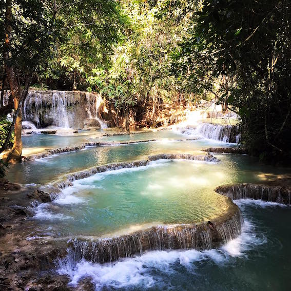

ラオス旅行2日目
アジア最後の桃源郷ラオス ルアンパバーンへ2日目

２日は、朝6:00に起きて托鉢へ
お坊さんに渡す食料を道端でおばちゃんから手渡され、準備完了。

お坊さんが400人通るので、食料を息つく暇もなく渡していく。
いい経験ができた。
托鉢終了後に、おばちゃんから高額なお金を請求された。やられた。
観光客向けのイベントとかしているようだった。

バイクを借りて、クアンシーの滝へ。
市内からバイクで一時間だ。

農村地帯を抜けていく。

農村地帯を抜けていく。

水牛も道を歩いている。

笑顔で手を振ってくれる。朝のぼったくりを癒してくれる。

バイクを降り、クアンシーの滝に向かう途中にクマがいた。

本物もたくさんいた。

クアンシーのた滝から流れてきた水が見えてきた。美しすぎる。
クアンシーのた滝から流れてきた水が見えてきた。美しすぎる。